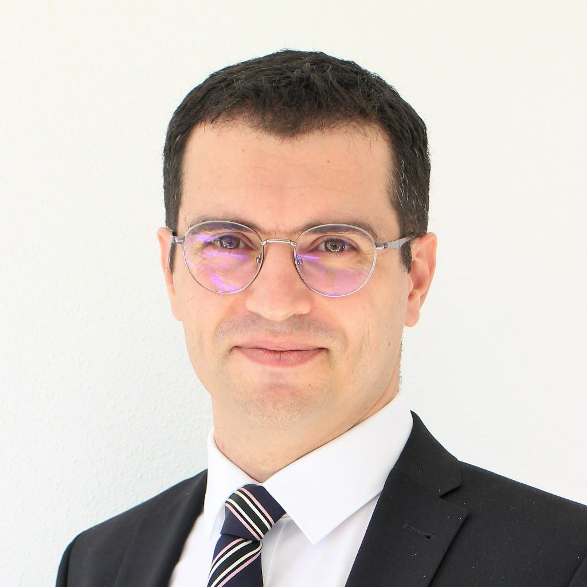

Dr.-Ing.
Expert and Consultant in Traffic & Mobility
Turning mobility data into smarter cities — 15 years of expertise in intelligent traffic systems and urban mobility planning.
Get in touch
Dr.-Ing. Walid Fourati is a traffic and mobility consultant with over 15 years of experience in intelligent traffic systems, urban mobility, and traffic engineering. Educated in three countries — Tunisia, France, and Germany — he bridges rigorous academic research with practical project delivery.
With a PhD from the Technical University of Braunschweig and a career spanning project engineering at Setec ITS (Paris), consulting at TRANSVER (Munich), doctoral research at TU Braunschweig, and co-founding mouver GmbH, Walid has built end-to-end expertise — from signal priority systems for Parisian transit lines to FCD-based congestion analysis on German motorways.
Available for independent consulting engagements with municipalities, urban planners, research institutions, and mobility technology companies.
Intersection capacity analysis, traffic signal planning and control, transit signal priority, traffic volume surveys, microscopic traffic simulation, and technical feasibility studies for public authorities and infrastructure operators.
Mobile and stationary traffic sensing, multi-source sensor fusion, data interpolation and extrapolation, trajectory-based data modeling, network performance assessment, and extraction of actionable insights from floating car data (FCD) and GPS probes.
Intelligent transportation systems strategy, signalized intersection optimization, and smart city mobility solutions.
Methodology development, peer-reviewed publications, and bridging academic research with industry applications.
A Method for Using Crowd-Sourced Trajectories to Construct Control-Independent Fundamental Diagrams at Signalized Links
Transportation Research Part C, Elsevier — PhD summary work
Trajectory-Based Monitoring of Saturation Flow Rate with Video Calibration
IEEE Intelligent Transportation Systems Conference (ITSC)
Estimation of Origin-Destination Matrices by Fusing Detector Data and Floating Car Data
Transportation Research Procedia
FANSI-Tool: An Integrated Software for Floating Data Analytics
25th ITS World Congress, Copenhagen
PhD in Traffic and Urban Engineering
Technical University of Braunschweig, Germany
M.Sc. in Urban Mobility
Université Paris-Est-Créteil, France
Engineering Degree — Urban, Environment & Traffic
École Nationale des Ponts et Chaussées, France
Engineering Degree — Civil Engineering
University of Tunis El-Manar, Tunisia
Interested in working together? Reach out for consulting inquiries, research collaborations, or speaking engagements.